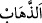
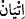
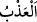

hemen bizimle birlikte gönder; onlara eziyet etme! Biz, senin Rabbinden bir âyet
getirdik. Kurtuluş, hidayete uyanlarındır.
“Haydi, ona gidin de deyin ki:” Daha önce Fir’avn’a gitmeleri emredildiği halde
âyette ikinci kez aynı emrin geçmesi tekrar değildir. Çünkü ilk âyette geçen “
”
kelimesi gitmek mânâsınadır. Bu âyette geçen “
” kelimesi ise ulaşmak mânâsına
gelir.
Sözün başında Fir’avn’un anlaması ve cevaplarını ona göre vermesi için o azgına
“Biz senin Rabbinin elçileriyiz” deyin.
“Elçi” anlamındaki “Rasûl”; “risâlet sahibi” demektir. “el-İrsâl” yani göndermek
fiilinden türemiştir. Örfte insan olsun, melek olsun ilâhî hükümleri tebliğ için gönderilen
zattır. Nebî ise böyle değildir. Çünkü nübüvvet, insanlara mahsustur.
“İsrailoğulları’nı hemen bizimle birlikte gönder.” Yâni bizimle Yâkuboğulları’nı
mukaddes topraklara gönder de atalarımızın yurdu olan yerleri yine görelim. Bahru’l-
ulûm’da belirtildiği üzere: ‘Onları serbest bırak, bizimle beraber Filistin’e gitmelerine
izin ver.’ Filistin Hârun ve Mûsâ (a.s.)’ın yerleştiği yer olup Şâm ile Mısır arasındaki
bölgedir. Remle, Gazze, Askalân ve diğer şehirler bu bölgededir.
el-İrşâd’da şöyle der: “Âyetteki ‘göndermek’ ifâdesinden maksad, İsrailoğulları’nın
illâ Şâm bölgesine gönderilmesi değil, onların esirlikten ve düşman elinden
kurtarılmasıdır. Nitekim âyetteki “Onlara eziyet etme!” ifâdesi de bunu gösterir. Yani
onları bulundukları durumda bırakarak onlara azâb etme/eziyet etme. Çünkü
İsrâiloğulları, Kıptîler’in hükmü altında yaşıyordu. Kıptîler taş taşımak ve hendek
kazmak gibi zor işlerde onları kullanıyorlar, iki yılda bir yeni doğan erkek çocuklarını
öldürüyorlar, karılarını da hizmetçi yapıyorlardı.
Âyette “İsrailoğulları’nı hemen bizimle birlikte gönder” hükmünün, Mûsâ ve Hârun
(a.s.)’ın peygamber olduklarının beyan edilmesi ile âyet getirme arasında zikredilmesi
ona verilen önemi göstermek içindir. Çünkü mü’minleri kâfirlerin elinden kurtarmak,
onları dîne dâvetten daha önemlidir.
“
”, şiddetli acı vermektir. Kelime, aslında yemeyi ve uyumayı terk etmek
anlamındadır. Azâb etmek ise aslında insanı yemeksiz ve uykusuz bırakmaktır. Bu
kelimenin aslının “
(tatlı)” kelimesinden, hoşnudluk elde etmek ve keffâret olmak
üzere hayatının tadını gidermek anlamında olduğu da söylenmiştir. Yine azâb etmenin
aslının kırbacın ucuyla çok vurmaktan geldiği de söylenmiştir.
“Biz, senin Rabbinden bir âyet getirdik.” Doğrusu biz senin Rabbinden bir nişan,
yâni mûcize getirdik. Her ne kadar Mûsâ (a.s.) birden fazla mûcize gösterse de burada
“âyet (delil ve mûcize)” kelimesi, tekil olarak getirilmiştir. Çünkü maksad delilin
birden çok olduğunu beyan etmek değil, o mûcizeyi delil getirerek dâvâyı ispat etmektir.
Sanki Mûsâ (a.s.): “Biz peygamberlik dâvâmızı apaçık destekleyen bir burhan/delil ile
geldik” demek istemiştir.
“Kurtuluş,
hidâyete
uyanlarındır.”
Selâmet/kurtuluş,
açık
ve
gizli